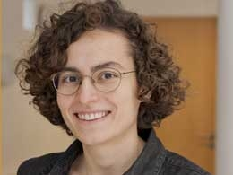

Hello!

I am a postdoc researcher at Inserm, in the CinetyKs Team , with Fabrice Wendling.
I am also an external collaborator of the MathNeuro Team, INRIA Sohia Antipolis - Méditerranée.
My research is mainly focused on multiple-timescale systems applied to biology and neuroscience. The central goal of my work is to model brain activity with dynamical systems and mathematical modeling to decipher the relations between neurophysiological components and to develop therapeutic strategies based on novel technologies